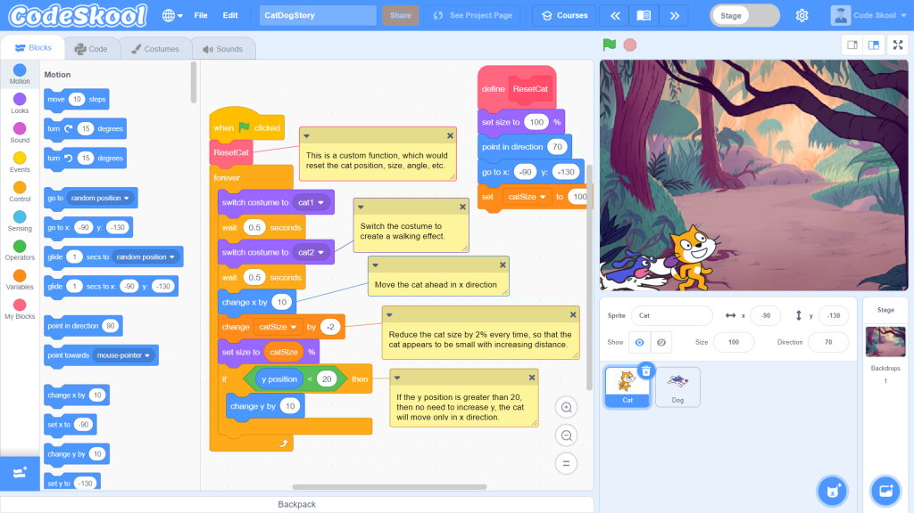

Scratch is a graphical programming language developed by the Lifelong Kindergarten group at the MIT Media Lab. In Scratch, you can drag and combine code blocks to make a range of programs, including animations, stories, musical instruments, and games. It’s a bit like the programming equivalent of building blocks!

Scratch is used in many schools as part of the curriculum. It is free, and young people can use it at home as well as in clubs.
Scratch allows young people to learn coding concepts and create interactive projects without needing to learn a text-based programming language. You will not need to be able to type quickly or remember complex code to use Scratch.